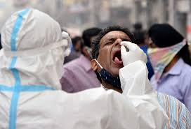

Media
Yes there are now several vaccines that are in use. The first mass vaccination programme started in early December 2020 and the number of vaccination doses administered is updated on a daily basis here. At least 13 different vaccines (across 4 platforms) have been administered.
The Pfizer/BioNtech Comirnaty vaccine was listed for WHO Emergency Use Listing (EUL) on 31 December 2020. The SII/Covishield and AstraZeneca/AZD1222 vaccines (developed by AstraZeneca/Oxford and manufactured by the State Institute of India and SK Bio respectively) were given EUL on 16 February. The Janssen/Ad26.COV 2.S developed by Johnson & Johnson, was listed for EUL on 12 March 2021. The Moderna COVID-19 vaccine (mRNA 1273) was listed for EUL on 30 April 2021 and the Sinopharm COVID-19 vaccine was listed for EUL on 7 May 2021. The Sinopharm vaccine is produced by Beijing Bio-Institute of Biological Products Co Ltd, subsidiary of China National Biotec Group (CNBG). The Sinovac-CoronaVac was listed for EUL on 1 June 2021.
For further information

Read More
Coronavirus disease (COVID-19) is an infectious disease caused by a newly discovered coronavirus.
Most people infected with the COVID-19 virus will experience mild to moderate respiratory illness and recover without requiring special treatment. Older people, and those with underlying medical problems like cardiovascular disease, diabetes, chronic respiratory disease, and cancer are more likely to develop serious illness.
The best way to prevent and slow down transmission is to be well informed about the COVID-19 virus, the disease it causes and how it spreads. Protect yourself and others from infection by washing your hands or using an alcohol based rub frequently and not touching your face.
The COVID-19 virus spreads primarily through droplets of saliva or discharge from the nose when an infected person coughs or sneezes, so it’s important that you also practice respiratory etiquette (for example, by coughing into a flexed elbow).
Read More
| country |
Confirmed |
Deaths |
Case-Fatality |
DEATHS/100K POP |
| Zimbabwe |
Zambia |
Yemen |
west Bank |
Vietnam |
vanezuela |
Uzbekistan |
Uruguay |
United State |
| 116,853 |
200,201 |
7,187 |
317,999 |
224,894 |
312,931 |
137,491 |
382,607 |
948,131 |
| 3,919 |
3,491 |
1,389 |
3,613 |
3,757 |
3,705 |
934 |
5,989 |
617,321 |
| 3.4% |
1.7% |
19.3% |
1.1% |
1.7% |
1.2% |
0.7% |
1.6% |
1.7% |
| 26.76 |
19.55 |
4.76 |
77.11 |
3.89 |
12.99 |
2.78 |
173.01 |
188.07 |
 Read More
Read More